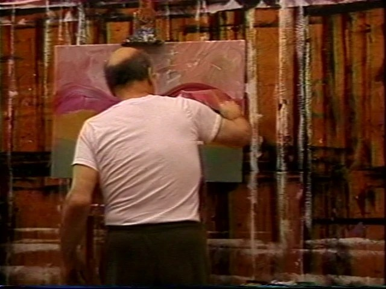

Running▶ Series videoWeekly · MondaysSession 2 of an open series
Explorations in Art Forms by Non Professionals
A weekly online hour for people who love art and might be hesitant to engage creating or are looking for new forms. Each week a different IFAC artist or dealer hosts.
Mondays6 pm Pacific · 9 pm Eastern · 3 am Paris (Tue)Online · free
JKevin Meadows, Eric Brummel, Jason Ford and others
Mon19Oct
Next session · tomorrowPutting Art as Tai Chi into Practice
with Kevin Meadows I'm coming